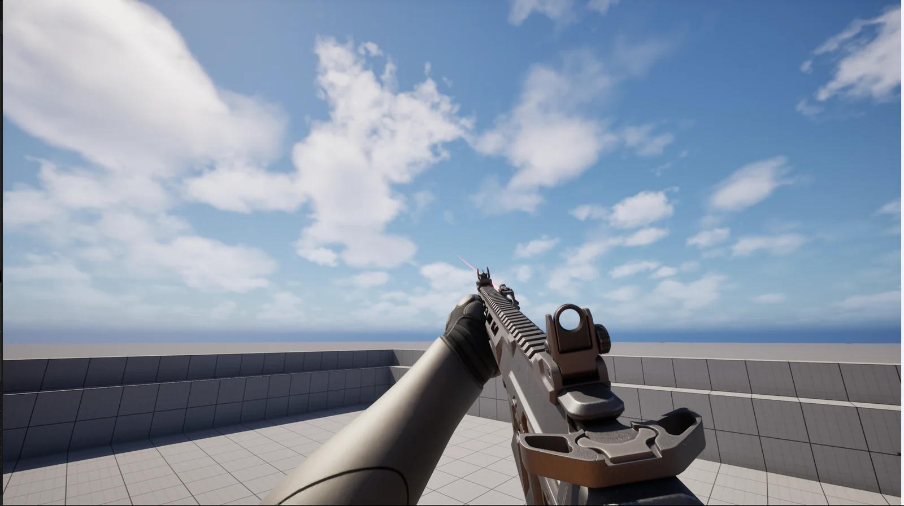
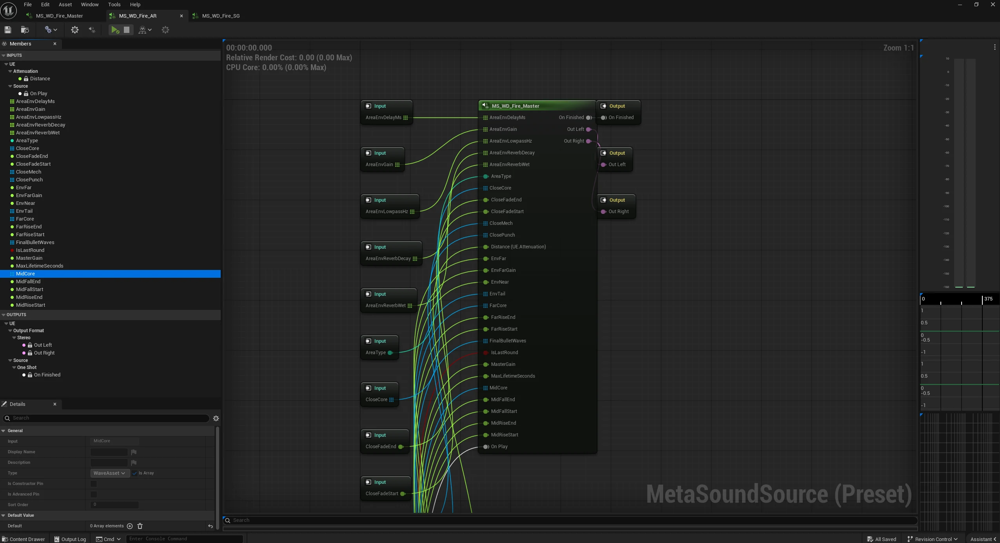

MS_WD_Fire_Master — one graph for the whole weapon
Weapon fire is rarely one sound. It is a close layer with real punch, a mid layer that carries across a street, a far crack that arrives late, and a tail that belongs to whatever space the player is standing in. Build those as separate cues and you end up maintaining four things that have to agree with each other.
MS_WD_Fire_Master is the opposite approach: one master graph that owns every layer, wrapped as a MetaSound Source preset so each weapon is just a different set of inputs. No duplicated logic, no four-way drift.


Distance does the mixing
The Distance input is fed straight from UE's attenuation system, so the graph always knows how far the listener is from the shot. Every layer then has its own crossfade window rather than a single global blend:
- Close —
CloseCore,ClosePunchandCloseMech, faded out betweenCloseFadeStartandCloseFadeEnd. Mechanical detail is the first thing to go; nobody hears the bolt from forty metres. - Mid —
MidCorewith a rise and a fall (MidRiseStart/MidRiseEnd,MidFallStart/MidFallEnd), so it owns the middle distances and gets out of the way at both ends. - Far —
FarCorerising in acrossFarRiseStarttoFarRiseEnd.
Giving each layer independent in and out points is the part that matters. A single crossfade value forces the layers to hand over at the same distance, which is exactly when you hear the seam.
The space is an input, not a second asset
AreaType selects the environment behaviour, and the AreaEnv* inputs carry the settings for it — pre-delay, gain, a low-pass corner, reverb decay and wet amount, plus EnvNear, EnvFar, EnvFarGain and the EnvTail waves. Indoors, a canyon and open ground are the same graph with a different index.
That keeps the reflection character attached to the weapon system rather than scattered across level-side reverb volumes, and it means a designer can audition a weapon in every space without leaving the asset.
Last round
IsLastRound and FinalBulletWaves handle the final shot in a magazine. It is a small thing that does a lot of work — it tells the player they are about to be reloading without a single line of UI, and it stops a long burst ending on an identical sample to the twenty before it.
Why a preset
Everything above lives in the master graph once. Each weapon is a MetaSound Source preset with its own waves and its own distance numbers, so a fix to the crossfade logic lands on every weapon at the same time. MasterGain and MaxLifetimeSeconds sit on top as safety rails, and On Finished reports back so the voice can be cleaned up properly rather than left to time out.
Render cost reads 0.00 at rest in the screenshot, which is the point of a preset — it costs nothing until it is triggered.
What is next
- Weighting the wave arrays so the less characterful takes come up more often than the standouts.
- A tail variant that survives the player moving during the shot, rather than being chosen once at trigger time.
- Indoor occlusion feeding the same
AreaEnvpath instead of running as a separate chain.
Note: work in progress — parameter names and ranges are still moving as the system is tested against more weapons.